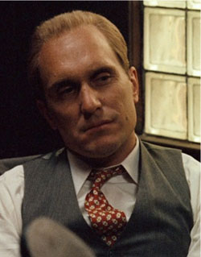
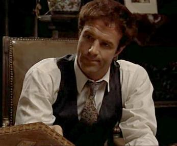
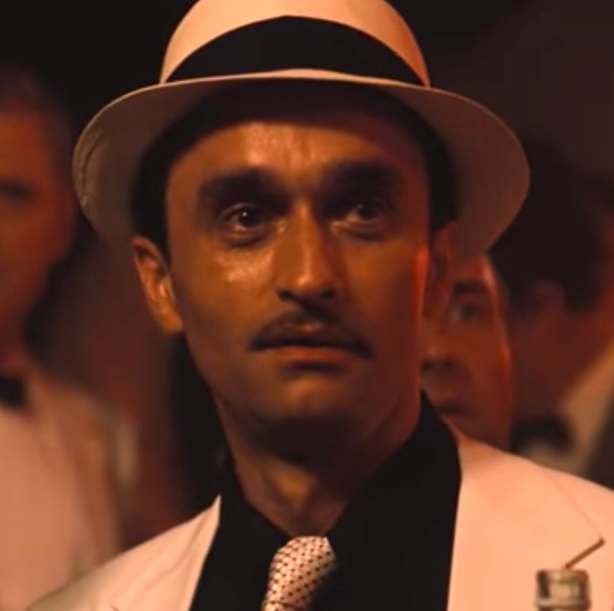
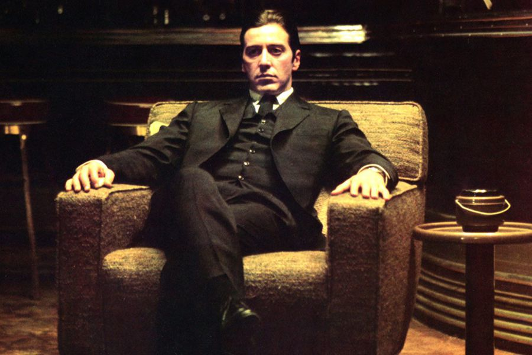

"I believe in America..." Así comienza este fascinante compendio de cine de Coppola. La compleja historia de una familia mafiosa liderada por un implacable padre de familia y hombre de honor (inmenso Marlon Brando) y cuyo poder hereda su hijo más pacífico (asombroso un primerizo Al Pacino de mirada gélida) es, ante todo, un ejercicio narrativo apabullante, de insuperable nivel. La brillante disección de todos los personajes, el ritmo magistral -que alterna largas secuencias familiares con creíbles escenas de acción- y una ambientación perfecta consiguen un film que entró "violentamente" entre los mejores clásicos de todos los tiempos, para alzarse con el título de obra cumbre del cine moderno.
El padrino tine 4 hijos, su vida su familia y estos son:
   